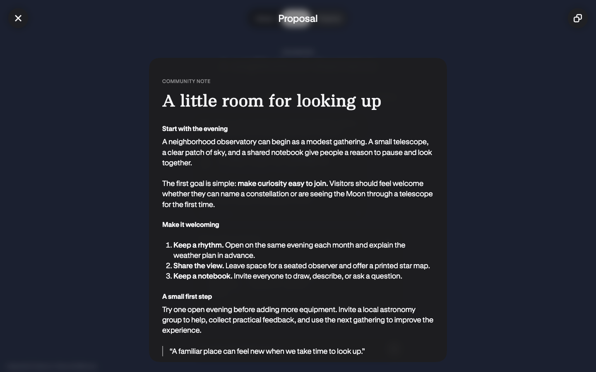
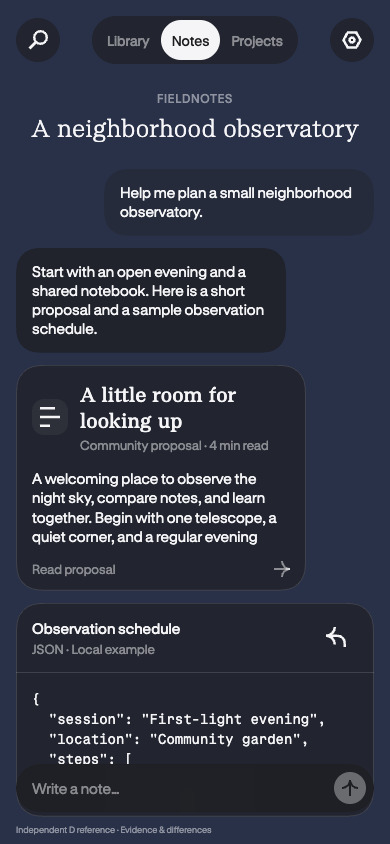
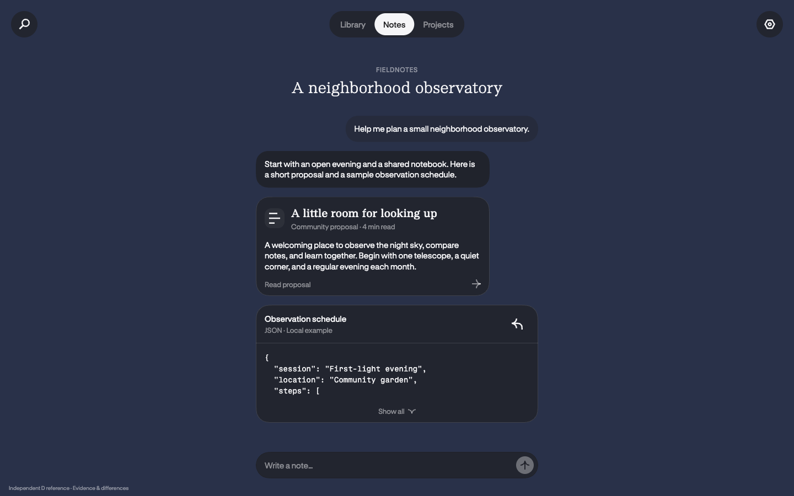
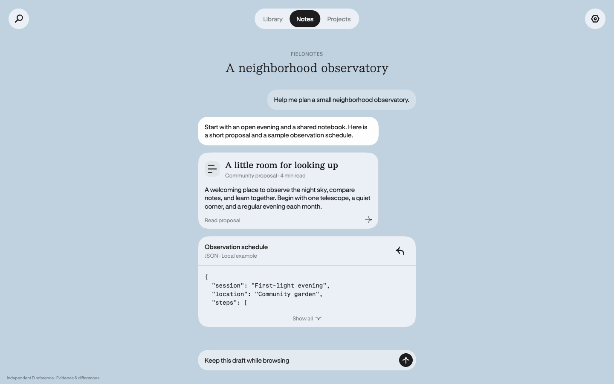
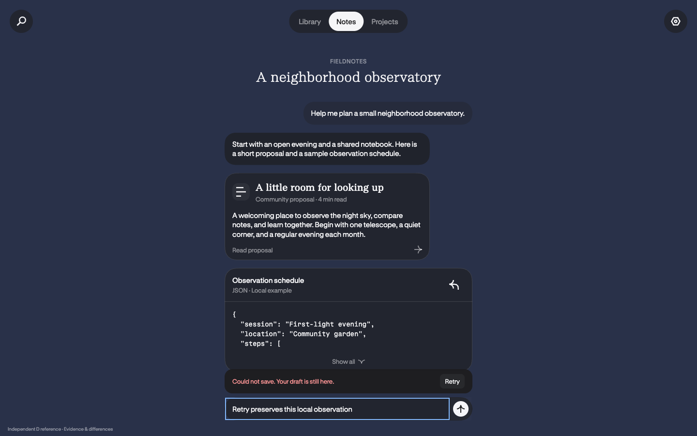
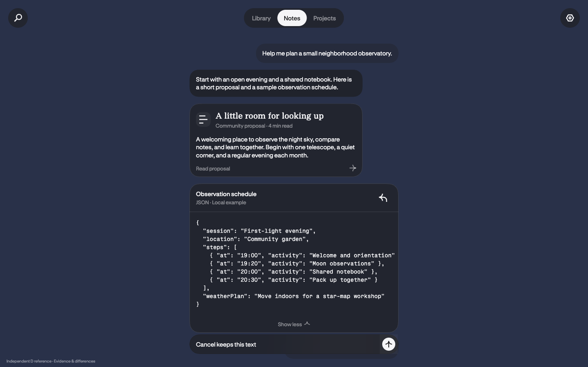
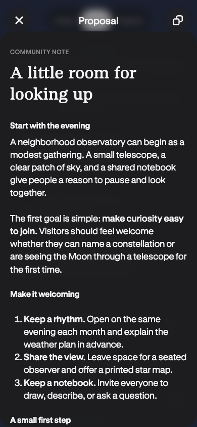

Historical Hark baseline and a transferable component slice
Partial source comparison · D reference tested
The left images are retained Hark observations from 15 October 2026 (Shanghai), inspected again on 22 October. The right images are an independent local implementation with neutral Fieldnotes content. No current authenticated Hark page was executed by this reference task. These are different contents and source conditions; this page makes no pixel-match or current-source equivalence claim.
Independent summary reading surface
15-summary-open.png
desktop-reader-dark.png
Transferred: independent reading layer, 720px sheet / 656px text band, current source top140, original Hark Serif title 40/52/500, GT Standard L body18/25.2 and original Bold700 secondary headings. Different: title/content/language, the extra D category placing the title28px lower, toolbar actions, background and overlay. The D narrow sheet is full-width with source top62; its title remains32/41.6.
Narrow content and anchored composer
27-mobile-chat.png
mobile-dark.png
Transferred: 16px composer insets, 358px width, 48px empty height, 15/19 body and distinct user/assistant materials. Different: independent navigation wording, fixed D backdrop, text and rich-card mixture. This is desktop Chromium viewport emulation, with no OS keyboard or touch verification.
Additional D states





Differences and limitations · Actual D run, metrics and SHA256 · Baseline identities and pair metadata · Reused source assets